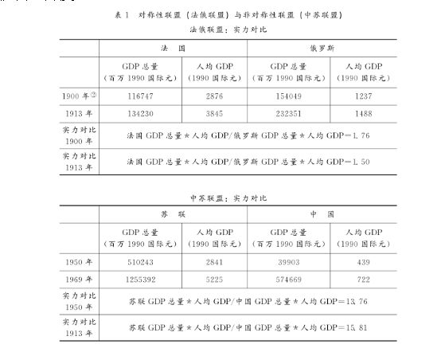
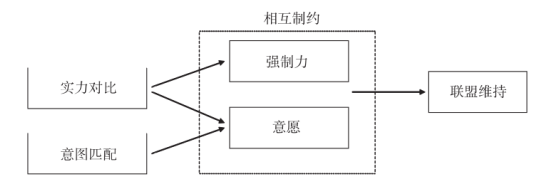
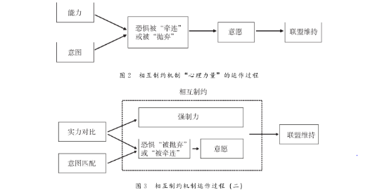
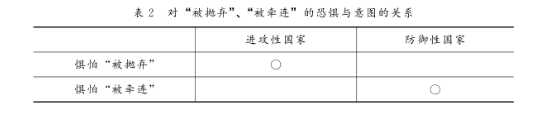
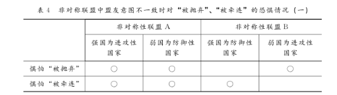
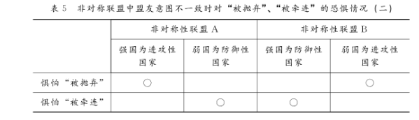
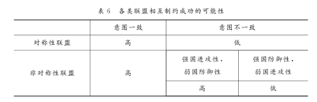
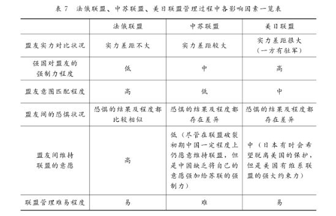

收录于合集

简 介
**
**
【作者】 苏若林，复旦大学国际关系与公共事务学院硕士研究生；唐世平，复旦大学国际关系与公共事务学院教授
【来源】 《当代亚太》 2012年第3期
【编辑】 王国欣
【审核】 李桐
内 容 提 要
本文主要探讨联盟管理过程中盟友之间互动的动态机制。通过归纳和推理，笔者发现，联盟维持和管理的机制是相互制约，两个变量——盟友之间的权力对比和意图匹配程度——通过相互制约的核心机制影响联盟的命运。按权力对比，联盟可以区分为对称性联盟和非对称性联盟；按联盟内部的国家意图，联盟可以区分为防御性联盟和进攻性联盟。这样，将至少有四个“理想型”联盟，每一个“理想型”联盟都存在自身特有的互动动态。总的来说，在对称性联盟中，若盟友意图一致，则彼此相互制约易于成功，联盟容易管理；反之，则不易管理。在非对称性联盟中，只有当强国为防御性现实主义国家而弱国为进攻性现实主义国家时，相互制约才相对困难，联盟才较难管理。文章以第一次世界大战前的法俄联盟、20世纪中叶的中苏联盟以及20世纪50年代之后的美日联盟作为案例，对本文提出的联盟管理理论进行验证。
关 键 词
机制 联盟管理 相互制约 权力对比 意图匹配程度
正 文
作为世界上最古老的安全战略之一，联盟一直是国际政治中的核心议题。其中，联盟的建立和联盟与战争之间的关系是学者们最关心的两个方面。相比而言，联盟管理，特别是盟友为管理联盟而进行的互动，却较少被谈及。实际上，联盟管理研究具有重大的理论和现实意义。
一方面，如果我们将联盟的建立作为联盟政治的起点，那么联盟管理就是起点之后的整个过程，是联盟成员国做出系统决策时不得不考虑的方面。换言之，联盟与战争的关系、联盟的行为、联盟对国际格局的影响等问题都是发生在联盟管理的背景下。只有理解了联盟管理，才能理解联盟政治的全过程。另一方面，盟友围绕管理联盟而进行的互动会影响其与联盟外国家的交往，并最终影响国际政治大环境。例如，中国与苏联在联盟关系中失败的互动迫使中国与美国缓和关系，从而直接改变了东北亚的冷战对抗格局。此外，联盟的破裂源于盟友之间管理联盟互动的失败，而联盟的破裂和重组又会对国际格局产生重大影响。从这个意义上来说，联盟管理应该成为联盟研究的核心议题之一。
为此，本文将着重分析联盟管理过程中盟友的互动机制。全文包括五个部分：第一部分是对现有研究的总结；在此基础上，第二部分将引入后文理论分析的前提条件、厘清重要概念的含义；第三部分是文章的理论部分，文章先按照实力对比和意图两个变量将联盟划分成不同的类型，随后讨论了各类联盟内具体的盟友互动过程；第四部分是案例研究，文章选取了一战前的法俄联盟和二战后的中苏联盟、美日联盟作为案例。
** 一 、 国内外研究现状**
现有的联盟理论主要关注三个方面的问题。 首先是联盟的建立 。以现实主义为代表的主流联盟建立理论认为，联盟的建立是为了应对出现的威胁或者平衡其他国家的权力或利益。还有学者将目光转向其他可能导致联盟建立的因素，如相同的意识形态、共同的国内政治体制等。但是，这些关于联盟建立的理论尝试大多是基于“联盟（一定）是防御性的”这一假设，很少涉及“进攻性联盟”（具体含义见下文）。 其次是关于联盟与战争的关系 。对该问题的研究，总的来说存在两种观点，有些学者认为联盟容易引发战争，而有些则持相反的观点，认为联盟不倾向于引发战争。例如，权力转移理论（power transition theory）强调联盟的成立与战争虽然没有直接必然联系，但联盟促进了权力平衡，当权力大体平衡时就会引发战争；而均势理论（balance-of-power theory）则认为，权力大体平衡时战争不易爆发，联盟在这一过程中起了很重要的作用。此外，还有些学者根据联盟内部盟友的数量来探讨联盟与战争的关系，他们通过定量分析方法得出联盟越大、越容易卷入战争的结论。然而，这些研究共同的缺失就是将联盟一视同仁，没有进行基本的类型学区分。事实上，不同类型的联盟与战争之间的关系是不同的，而上述观点都只是看到了联盟与战争关系的不同侧面。 第三，联盟内政治的研究 。对联盟内政治的研究是联盟理论中最为欠缺的部分，也是本文试图解决的问题。
具体来说，现有的对联盟维持（alliance maintenance）和联盟管理（alliance management）的研究，存在以下三个特点：
第一，着重分析某个联盟内部盟友之间的互动及其联盟管理 。总的来说，有三个联盟获得了普遍的关注，即美欧联盟（以NATO为代表）、美国在东亚的双边联盟（以美日联盟为代表）和苏联的社会主义联盟（以中苏联盟为代表）。受到研究题目的局限，这些分析所得出的结论大多只限于解决单一联盟的问题，不具有广泛的适用性。例如，斯坦利·霍夫曼（Stanley Hoffmann）认为，在西方阵营中，美国和西欧存在着五个方面的分歧（如对世界的看法等），他进一步指出，上述分歧主要是由双方在地理、历史、国内政治要求和政治文化四个方面的差异造成的。诸如霍夫曼这样的讨论一方面只是进行简单的原因罗列，并没有给出一个完整的美欧互动机制；另一方面，正如其文章标题所示，这个结论仅限于西方阵营，显然无法为我们理解其他联盟提供普遍的借鉴意义。
第二，倾向于研究联盟管理的某个侧面。 例如，某些研究利用公共产品理论（collective-goods approach）等经济理论来解释联盟内部的搭便车现象；或者将联盟管理等同于盟友间为了维护自身利益而进行的讨价还价；又或者着重讨论某个或某几个因素对联盟管理的重要作用，如外部威胁等；此外，还有学者从意识形态或成员国国内政治制度的角度来理解联盟管理。
特别是自从1984年格林·斯奈德（Glenn H. Snyder）的《联盟政治中的安全困境》这篇重要论文发表之后，将联盟内政治作为一个整体所做的讨论大多都集中在“被抛弃”（abandonment）和“被牵连”（entrapment）这两个因素上。这些讨论认为，对上述两个结果的惧怕是联盟的核心动力机制，盟友间的互动都是围绕这两个机制展开的。此外，另一个受众多学者关注的焦点是盟友在战争中的承诺问题，这基本上可视为“被抛弃”和“被牵连”问题的延伸。在冷战时期，承诺问题又与“延展性威慑（extended deterrence）”紧密相连。
事实上，斯奈德的讨论并不能为我们理解联盟内政治提供一个全面的图景。首先，将害怕“被抛弃”和“被牵连”视为机制性的解释其实是一个误区。“被抛弃”和“被牵连”是失败的联盟管理的两个可能结果。换言之，如果联盟管理不佳，可能的结果就是“被抛弃”或“被牵连”。而对这两者的恐惧只是影响联盟管理的因素之一，并非机制。它并不满足关于机制的定义（详见下文）。具体来说，这种恐惧尽管在联盟内部产生变化，但是它既不是一个过程，也无法将可能影响联盟管理的各个因素串联起来，故而这种恐惧不能被视为联盟管理的核心动力机制。其次，斯奈德将其联盟理论直接建构在对“被抛弃”和“被牵连”的恐惧基础上，却未发现在各类联盟中盟友对这两者的惧怕程度是不同的，并且不同程度的恐惧会对联盟管理产生不同的影响。同时，他也没有解释何种因素会导致或左右这种恐惧，而是将其作为一个恒定的变量。换言之，他认为所有的联盟都会通过同样的恐惧路径来进行管理。然而，正如下文将展示的那样，由于联盟自身特性的不同，会存在不同程度的恐惧，最终导致联盟管理方式产生较大差异。
总而言之，尽管前人为我们理解盟友管理联盟时的某些行为提供了一些可借鉴的解释，但是他们并没有给出一个普遍的联盟管理的核心动态——一个既不专属于某个联盟、也不局限于联盟内部某类问题的动力机制。这样的核心动力机制必须根植于联盟内部，需由联盟本身的一些特性所决定。而对联盟内部动力机制的忽视或误解将不利于我们全面地理解联盟管理。
要想理解联盟破裂或维持这一普遍现象，就必须寻找到一个机制。对于联盟内政治核心动力机制的探讨，一方面可以在理论上填补相应的空白，完善联盟管理理论；另一方面也可以帮助我们理解联盟维持和破裂这一重要事实。
** 二 、 概念与前提条件**
在进一步探讨联盟管理机制之前，我们首先要厘清一些核心概念。
1.分析背景
这里要特别强调以下四点。（1）联盟政治在和平与战争的框架中会有不同的运作模式。战争状态下，由于存在迫切需要应对的共同敌人，一般来说，盟友之间的协作会相对紧密，彼此之间的协调也相对容易。而在非战争状态下，外在压力较小，盟友间的互动更为复杂，同时也更能够反映普通情况下盟邦围绕联盟管理的交往过程。故而，下文分析的都是 非战争状态下的联盟管理 。（2）联盟维持是本文讨论联盟管理的动力机制的前提。尽管联盟管理过程中盟友互动妥协的失败必然导致联盟的破裂，但是联盟的破裂并非单纯源于盟友之间互动的失败，它可能还由其他一些原因所导致，例如联盟建立之初所设定的任务的完成（如共同敌人的消失）、盟友自身政治状况的改变（如国内政权更迭）等。因而， 除失败的 盟友互动外，下文的讨论将不再考虑其他可能导致联盟终结的因素 。（3）对联盟崩溃的一个显而易见的解释是国家利益（或者目标）的不同或者冲突。但是，恰恰因为这一解释太“显而易见”，所以它事实上是乏力的。一方面，由于没有两个国家的目标是完全一致的，因此，国家目标的不同作为一个常态并不能解释联盟的不同命运，至少还需要说明利益在多大程度上的不同才能导致联盟的崩溃。另一方面——也是更重要的，建构主义早就告诉我们，国家目标并不是一个独立的变量，因此，用国家目标的不同来解释联盟的崩溃是不够的，甚至是偷懒的做法。最后，对于国际政治来说，意图要比目标更为关键。（4）联盟 成员之间权力分配的变化无疑也是影响联盟稳定性的一个重要因素 （比如，盟友之间的权力分配从原来的大致相当变成了非常不平衡）。但是，在下文将要讨论的联盟中，这一因素不太重要，所以本文也不详加讨论。20世纪七八十年代日本的经济腾飞（和泡沫）确实给美日联盟的管理带来了一定的调整，但是因为美国在联盟中的超强控制力（美国在日本的驻军），美日联盟在这一时期并未经历太多的动荡。在我们考察的时段，法俄两国在法俄联盟中的力量对比大体稳定。类似地，中苏两国的力量对比在中苏联盟裂痕出现的时段也没有大的变化。事实上，这一时段（1950-1969）中国相对于苏联的实力下降了，而不是上升了（见下文，特别是表1）。
2.机制
本文采用经唐世平修正过的马里奥·邦格（Mario Bunge）的对机制（mechanism）的定义，即“机制是存在于实际系统中的一个过程，它可以引发或者阻止整个系统或者其子系统的某些变化”。 机制具有如下三个特点：首先，机制是一个过程；其次，机制能够引发或者阻止变化；第三，机制能够将某些因素串联起来，从而驱动变化或阻止变化（反过来说，因素只能通过机制才能驱动变化或阻止变化） 。
3.进攻性联盟和防御性联盟
进攻性联盟和防御性联盟的区分主要视其成员国的战略意图而定。如果一个联盟中进攻性现实主义国家占据优势地位，则该联盟为进攻性联盟；反之，若防御性现实主义国家占优，则该联盟为防御性联盟。 而优势地位的评判主要考虑该类国家的数目和整体实力等方面。
意图是一个国家实现其目标的战略偏好（preference over strategy）。按照意图的不同，我们可以将国家分为两类：进攻性现实主义国家（下文简称进攻性国家）和防御性现实主义国家（下文简称防御性国家）。进攻性国家通过故意损害他国的利益或安全来实现自身安全；而防御性国家则除极端状况外，一般不会通过故意损害他国利益或安全来实现自身的安全。
对于进攻性和防御性的分类，有两点值得注意。首先，一个国家的战略偏好并非一成不变，在一定国内外条件下，国家的意图可能会发生改变。一方面，一个国家有可能一开始是进攻性国家，但随着国际环境的变化，逐渐转变为防御性国家。另一方面，不同的领导人有不同的执政风格，他们对国家的定位以及战略选择也不尽相同。因此，在具体操作过程中，本文通过考察不同领导人执政时的战略偏好来确定该国的意图。正是由于成员国意图的可变性，联盟的性质也不是固定的，它会随着成员国性质的变化而变化。其次，随着时代的发展，特别是第二次世界大战以后全球化程度的加深，国家之间的关系变得复杂起来，国家的战略意图也相应变得更为复杂。各国可能会在不同议题上存在不同的战略偏好。例如朝鲜战争后，美国在朝鲜问题上表现出进攻性的意图，而在处理与其他国家关系上则比较倾向于防御性。为了方便研究，下文将从整体把握国家的意图，除非特别提出，否则将不再考虑特例问题。
4.对称性联盟和非对称性联盟
联盟的对称性主要考察的是盟友之间的实力对比是否悬殊。 如果成员国中有一方的物质力量明显强于其他国家，则该联盟为非对称性联盟；而如果成员国之间物质力量不分伯仲，则该联盟为对称性联盟 。这里我们沿用唐世平和龙世瑞发展的一个相对更加简洁而有效的指标来度量：当一国的GDP总量（total GDP，百万1990年国际元）与该国的人均GDP的积（1990年国际元）是另一国的两倍或以上时，则联盟是非对称的；而如果低于两倍，则联盟是对称的。从表１可以看出，法俄联盟是对称性联盟，而中苏联盟则是一个极其不对称的联盟。
相对困难的情况是对于多边联盟的对称性划分。在一个多边联盟中，国家的实力对比可能出现以下两种情况：(1)有一个国家的实力远远超过其他成员国，这种情况下我们将其划分为非对称性联盟；(2)有两个或两个以上的国家实力远远超过其他国家，而这几个国家的实力基本相当。在这种情况下我们很难断定其对称性。一方面它具有非对称性的特点——大国和小国之间有较大的实力差距，但是另一方面，由于存在两个或两个以上的大国，该类联盟也具有对称性的特点。针对第二种情况，为了便于研究，下文将其简化为对称性联盟来考虑。这是因为在这类联盟中，大国与小国的互动虽然存在，但其在联盟管理中的重要性要远远低于实力雄厚的盟友之间的互动。对于大国来说，与同等实力的盟友处理好关系更为重要，只要处理好与他们的关系，联盟就能够持续下去，即便有些实力弱小的国家对某些问题不满，但限于自身的实力，他们也很难做出根本性的改变。

5.“被抛弃”和“被牵连”
“被抛弃”简单来说就是遭到盟友的背叛 ，“被抛弃可能有许多具体形式：盟友转而与敌人结盟；盟友脱离联盟，废除联盟条约；盟友未能很好地履行其明确的承诺；抑或未能在意外事件中提供自己所期望获得的支持或援助。” “被牵连是指一方因维护盟友的利益而被卷入一场冲突，并且该利益多 与此国无关或只部分相关。 ”
“被抛弃”和“被牵连”两者的关系并不是静态的，这种关系的动态性体现在以下两个方面。首先，正如斯奈德所提到的，“被抛弃”和“被牵连”是此消彼长的关系，“削弱其中一个就会助长另一个。”一方如果不想“被抛弃”，则需要采取合作的策略，严守联盟承诺，那么该国在降低被盟友抛弃的风险的同时，也会增加自己被盟友牵连的危险。反之，如果该成员国不想“被牵连”、采取相对疏离的联盟策略，那么其被盟友抛弃的风险就会增加。其次，对于“被抛弃”和“被牵连”这两种结果的恐惧也有自身的动态关系。这两种惧怕按其内在逻辑其实体现了联盟的两个特性——帮助与束缚。“被抛弃的代价大小大多视该国自身对联盟的依赖程度而定；而被抛弃的可能性则主要看盟友对联盟的依赖和承诺的程度；”“被牵连的代价大小取决于盟友间利益的不协调程度以及预计的战争成本大小；而被牵连的可能性则赖于盟友与其对手冲突的激烈程度、其独立承担冲突的信心及其对联盟的承诺程度。”因此，惧怕“被抛弃”一定程度上反映了联盟本身对该国的重要性，而惧怕“被牵连”则反映了联盟对该国的束缚。“当对‘被牵连’的惧怕胜于对‘被抛弃’的惧怕时，联盟成员国要么会放松他们的整体联盟承诺，要么会在后来盟友与其对手的具体争端中减少支持。”
三、联盟管理的机制
我们认为，联盟管理的机制是相互制约（mutual binding/constraining）。原因如下：首先，相互制约是个过程。众所周知，联盟之所以能够维持就是因为盟友们在面对问题时可以相互协调和妥协，而这个妥协过程就是盟邦之间的相互制约。其次，相互制约能引发变化。相互制约是指在联盟内部一方约束另一方行为的同时，自己的行为也受盟友约束的过程。具体来说，如果盟友间能够相互制约——这意味着各方行为时都还忌惮于他国，则盟友们能够就所面临的问题进行妥协，那么联盟关系就能继续；若盟友间相互制约失败——即各方均按自己的想法行事，盟友间无法通过和平方式解决问题，那么联盟就难逃破裂的命运。简言之，相互制约能够引发整个联盟体系的变化。最后，相互制约这个过程能够很好地将影响联盟管理的因素（如对“被抛弃”和“被牵连”的恐惧等）串联起来（详见下文分析）。综上所述，相互制约符合既有的对机制的定义，满足成为机制的条件，故而可视为联盟管理的机制。
然而，具体到联盟管理的过程，就并非单纯的相互制约机制所能解释，还需要找到影响这一机制发挥作用的因素。通过对诸多的联盟历史的考察，我们认为直接影响相互制约机制的浅层因素有二：一方是否有能力强制约束另一方；一方是否有意愿被制约。而影响这两个浅层因素的深层因素则是实力对比和盟友意图的匹配程度这两个变量。 实力对比是指在联盟中盟友实力大小的分布结构。而盟友意图的匹配程度则指盟友是否具有相同或相近的战略意图，这有三种可能：同为进攻性或同为防御性或者分属不同的意图。 实力对比和意图匹配程度之所以能够成为影响相互制约机制的深层因素，是因为 实力对比决定了一方是否有能力强制约束另一方，而意图匹配程度则更多地决定了一方是否有意愿去和盟友妥协。 然而，与盟友妥协的意愿并非仅仅受制于意图匹配程度这一个变量，在某些条件下，实力对比也能够对其产生影响（见图１）。

一方对盟友的强制约束能力可谓相互制约机制中的“物质力量”，其相对客观、不易变更，而与盟友妥协的意愿则可被视为该机制中的“精神力量”或“心理力量”，它相对主观，不同条件下可能有不同的结果。我们很容易理解强制约束力是如何影响相互制约机制的，但是受制意愿却并非与相互制约机制直接相关，它是通过控制联盟成员国的恐惧而起作用的。正如前文所述，对于“被牵连”和“被抛弃”这两种结果的恐惧一直贯穿盟友互动过程的始终，这种恐惧会因盟友不同的实力、意图状况而存在差异。具体来说，可能有些国家更惧怕“被牵连”，而有些国家却更害怕“被抛弃”。 实力对比和意图匹配程度这两个变量正是通过影响成员国的恐惧来制约其管理联盟意愿的 。按照实力对比和意图情况将联盟进行分类，不同类型的联盟存在着不同的恐惧模式，这种恐惧模式与实力对比、意图匹配程度的互动决定了在该类联盟中盟友之间能否成功地进行相互制约（见图２）。综上所述，我们可以概括出实力对比和意图匹配在相互制约机制中起作用的具体过程（见图３）。下文笔者将按照实力对比和意图匹配程度两个因素把联盟进行归类，并结合恐惧、强制能力来详细分析各类联盟中盟友之间的互动过程。

（一）对称性联盟
在对称性联盟中，盟友之间的实力较为接近，这就意味着盟友在彼此的安全保障上所能贡献的力量大致相同，因此不存在一方更依赖于另一方的情况。换言之，盟友间的权力和义务是比较对称的，彼此相互制约的能力不分伯仲，这使得各盟邦对“被牵连”和“被抛弃”的恐惧也是相对对称的，所以单纯从实力角度无法判断哪一方更为恐惧哪一种结果。
此时，我们可以引入第二个变量，即意图的匹配程度。进攻性国家希望通过损害他国利益来维护自身安全，而防御性国家则倾向于在不损害他国利益的同时实现自身安全。因此， 对于进攻性国家来说， “被抛弃”比“被牵连”更可怕 ，因为一旦“被抛弃”，进攻性国家损害他国利益来实现自己安全的能力将大大降低，并且还有可能存在盟友变成敌人的风险。此外，鉴于进攻性国家损人利己的战略偏好，从另一个角度来看，“被牵连”有利于该国的长远安全，换言之，进攻性国家因其进攻性的战略偏好更容易拖盟友下水。而 对于防御性国家来说，其对 “被牵连”的恐 惧要甚于对 “被抛弃”的 恐惧 ，这是由于“被牵连”意味着与无关的第三方发生本可避免的冲突，这严重有悖于防御性国家的战略偏好。反观“被抛弃”，如若盟友间战略偏好相似，则该风险较低，而如果战略偏好相左，那么“被抛弃”对防御性国家来说未尝不是一种解脱。因此，从施动的角度来讲，在忽略其他条件的前提下， 防御性国家更容易抛弃进攻性盟友 。
正如上文所述，在对称性联盟中，由于盟友间实力大体均衡，因此，影响相互制约成败的是盟友间的意图匹配程度。在盟邦同为进攻性国家（即进攻性联盟）的情况下，“被抛弃”的可能性极低，盟友对于“被抛弃”和“被牵连”的恐惧也很小，彼此之间协调的意愿很高，从而相互制约比较容易；而 在盟邦同为防御性国家（即防御性联盟）的情况下， “被牵连”和“被抛弃”的可能性都很低，他们对此类结果的恐惧也很小，最终相互制约更可能成功。但是在盟邦意图不一致时，若发生“被抛弃”的结果，则多为防御性国家“抛弃”进攻性国家，而若发生“被牵连”的结果，除防御性国家被动应战外，也多为进攻性国家 “牵连”防御性国家。 换言之，进攻性国家对“被抛弃”的恐惧极大，而防御性国家对“被牵连”也有极大的恐惧，这使得各国被盟友约束的意愿较低（见表２）。另外，加上盟友间大致相近的实力状况，很难出现一方强制另一方改变意图的情形，因此相互制约比较难以成功，联盟破裂的可能性较高。

（二）非对称性联盟
相较于对称性联盟，非对称性联盟成员国间相互制约的互动过程更为复杂，这是由于盟友实力的非对称性使得“实力对比”这个变量在相互制约过程中开始起作用。正如前文所述，实力对比对相互制约机制有两方面的影响：一是决定了一方在意图不一致的情况下是否有能力强制约束盟友；二是影响成员国对“被抛弃”和“被牵连”的恐惧，从而改变其为维持联盟而被盟友制约的意愿。
在第一种影响中， 强国的实力越强、与弱国盟友之间的差距越大，该国就越有可能约束盟友，从而成功地维持联盟 。其原因在于：一方越强大，弱小一方脱离联盟所要付出的代价就越大，强国对弱盟友的控制力就越强，故而遇到问题时多以小国的妥协而告终。在该类联盟中，相互制约机制在运作时也是非对称的，主要体现为强国对弱国的制约。第二次世界大战之后出现了一种较为新颖的非对称性联盟的组织形式，即一方在另一方的领土上驻军，如美日联盟和美韩联盟。这种联盟形式的新颖之处在于其用驻军的方式体现出了强国对弱盟友的强大约束力。在这种联盟中，盟友间尽管仍有摩擦，但是不会影响联盟的维持。这主要源于强国驻军的两层意义：一是驻军表明了强国保障盟友安全的承诺，降低了弱国对“被抛弃”的恐惧；二是驻军证明了强国有实力控制盟友。在驻军的条件下，弱国一般不会与强国在重大问题上发生冲突，即便有，强国的驻军也能在第一时间威慑弱国。
在第二种影响中，强国因其更胜一筹的实力，在联盟中承担更多的责任，也必然有更多的自由，因此，一般情况下， 对于强国来说， “被抛弃”远没有“被牵连”可怕。一方面，由于强国在联盟中承担了主要的安全责任，因此失去一个实力较小的盟友对强国的安全所带来的危险也相对较小；另一方面，正是由于强国在联盟中的优势地位导致其不愿因为弱国的安全而影响自身的权益，所以强国不希望被弱国拉入一场于己无益甚至有害的冲突中，这就使得强国比较惧怕被弱小盟友牵连。 而对弱国来说，情况却恰恰相反，他们对 “被抛弃”的恐惧远大于对“被牵连”的惧 怕 。由于弱国相对依赖强国盟友来保障自身安全，故而“被抛弃”对弱国的安全来说可谓致命的一击；而强国自身卷入的冲突若在自己解决范围内多半不会拖盟友下水，即便真的牵连盟友，强国也会因盟友实力有限而不将其作为主要对敌力量。
在盟友意图一致的情况下，非对称性联盟成员国对“被抛弃”和“被牵连”恐惧的差异主要来源于实力差别（见表3）。因此，此类联盟的维持相对容易，其互动过程为：意图一致性使得各成员国维持联盟的意愿较高，存在一定差距的实力对比也有利于强国运用强制力来约束盟友行为，最终实现联盟的正常运行。
而在盟友意图不一致的情况下，我们需要综合实力对比和意图两个变量来考察盟友的恐惧。正如在对称性联盟的讨论中所提到的，进攻性国家更恐惧“被抛弃”，而防御性国家则对“被牵连”更加惧怕。若将实力对比和意图两个变量的情况简单叠加，我们可以得到下面的结论（见表4）。

1.如表4所示， 如果强国为进攻性国家、弱国为防御性国家 ，那么盟友们对两种结果都会惧怕。但是很显然，这样的结论太过粗糙，并没有说明在这种情况下，哪种结果更为可怕。因此，在分析此类联盟时，我们需要引入实力对比和意图这两个变量的互动，以此来解释盟友具体的恐惧状况。实力对比和意图并非分别对恐惧产生影响，而是共处在一个系统中，所以就存在这两个变量共同影响恐惧模式的情况。因此，我们要首先来看一下这两个变量之间的互动。
在这类联盟中，对进攻性的强国来说，其对“被牵连”的惧怕相对较小。一方面，弱国为防御性国家，一般不会主动卷入战争；另一方面，如若防御性国家被动应战，那么此举也是对强国的挑战，强国加入冲突之中也是承担联盟条约所规定的责任。而对防御性的弱国来说，则十分惧怕“被牵连”，这种惧怕大到一定程度有可能使其通过抛弃强大盟友来脱离联盟，这也从另一个角度证明了强国在这类联盟中更惧怕“被抛弃”。首先，强国因其实力强大，故而利益点相对弱国来说更为广泛，这就意味着强国的大多数利益点与弱国无关。而强国的进攻性特性，使其很容易卷入与他国的冲突中，那么此时弱国被卷入与己无关的冲突的风险会很大。其次，弱国实力孱弱，一场冲突可能对其国内造成巨大的负面影响，尤其是在卷入他国的利益纠葛的情况下，其国内政治、经济等难免受到重创，这是弱国难以承受的。此外，进攻性的强国为实现自己的安全，不太可能抛弃盟友，尽管对方可能实力有限，故而对于弱国来说，相较“被抛弃”，“被牵连”更为可怕。综合以上考虑，我们可以得出更为精确的结论：在进攻性强国与防御性弱国组成的联盟中，强国更惧怕“被抛弃”，而弱国更惧怕“被牵连”（见表５）。
从上文的论述我们可以发现，该类联盟的互动过程尤为复杂。在解决了实力对比与意图两个变量共同影响恐惧的状况之后，此类联盟的互动过程仍然不十分明晰。这是因为联盟管理和相互制约的过程是受强制力和意愿共同的影响，因此，考察最终联盟互动过程时我们还要引入强制力和受强制意愿（具体来说就是恐惧状况）两个因素的互动。正如我们在概念分析中所提到的，对“被抛弃”的恐惧其实反过来证明了联盟对该国的重要性，而对“被牵连”的恐惧则反映了联盟对成员国来说可能成为负担。具体到这类联盟，强国惧怕“被抛弃”，证明强国不仅不会轻易放弃联盟，反而会运用自己强大的实力给予弱国压力，从而维持联盟；而弱国惧怕“被牵连”主要是因为承受不了无谓冲突带来的严重后果，但是弱国也要考虑自己能否承受得住抛弃联盟后面临的强国的打击。因此， 这类联盟中盟友的互动过程为：强国因惧怕 “被抛弃”，故而制约弱国的意愿变强，加上自身的实力状况，强国制约弱国成功的可能性会与双方实力差距成正比，即差距越大，制约越可能成 功。反观弱国，尽管害怕 “被牵连”，但是与强国的实力差距越大，其脱离联盟所要承担的后果越严重，因而越可能被制约成功。因此，此类联盟的管理相对容易，并且盟友实力差距越大越容易管理。
**
**

- 如果强国为防御性国家、弱国为进攻性国家，那么通过实力对比和意图两个变量对恐惧的影响，我们可以得出如下结论：此时防御性的强国更惧怕 “被牵连”，而进攻性的弱国更惧怕“被抛弃” （见表5）。对于强国来说，其实力强、防御性等特点都使其惧怕“被牵连”；而弱国的实力弱、进攻性特点导致其更害怕“被抛弃”。这就意味着，与其他由单一因素引起的恐惧相比，这种联盟中双方各自的恐惧程度更深，更难解除。
要理解这一类联盟，我们仍然需要讨论实力对比的第一种影响与恐惧这对变量的互动。如上文所述，惧怕“被牵连”意味着联盟是一种束缚，会产生一定的离心力，如果能像前一种联盟那样得到有效的控制，这种离心力不至于破坏联盟。但是在此类情形下，强国怕“被牵连”，需要制约该离心力的重担就压在了弱国肩上。然而鉴于弱国较逊的实力，制约强国变得很难。尽管惧怕“被抛弃”体现了联盟的重要性，能产生联盟维持的向心力，但是这种向心力来源于弱国，问题仍旧落到了弱国的实力不足以制约强国上来。
因此，其互动过程为：通过实力对比、意图两个变量，得出强盟友惧怕“被牵连”，弱盟友惧怕“被抛弃”。弱国因自身实力有限，很难控制强国惧怕“被牵连”这一离心力，也无法将自己惧怕“被抛弃”这一向心力转化为对盟友的实际制约能力。故而，这类联盟相对难以管理。
综上所述，在不考虑其他因素的前提下，我们可以得出关于联盟管理难易的结论：对称性联盟中，若盟友意图一致，则彼此相互制约易于成功，联盟容易管理；反之，则不易管理。非对称性联盟中，只有当强国为防御性国家、弱国为进攻性国家时，相互制约难以实现，联盟才较难管理；其他情况下，联盟管理相对容易 （见表 6）。
**
**

** 四 、 案例分析**
本文选取了三个案例来进行分析，他们分别是第一次世界大战前的法俄联盟、20世纪中叶的中苏联盟以及20世纪50年代之后的美日联盟。之所以选择这三个案例是因为他们存在一定的内在优点：（1）这三个联盟在地理位置上分属于不同的区域，因此整体背景非常不同。盟友之间在制度安排、文化、意识形态等方面存在着巨大差异。只有通过这样差别较大的案例，我们才能排除更多的干扰变量，从而更有效地验证前文提出的联盟管理理论。（2）这三个联盟在时间范畴上分属不同的时段，一个是第一次世界大战之前，一个是冷战时期，还有一个一直持续到现在。按照国际政治时代的划分，前者属于进攻性现实主义时代，而后两者则属于防御性现实主义时代，因此这三个案例的国际格局背景十分不同。在初始条件如此不同的情况下，若仍然能够验证现有的理论，将大大提高理论的可信度。（3）这三个案例可以有效地考察前文提出的两个变量是如何在相互制约中起作用的。一方面，中苏联盟和美日联盟在建立之初都是非对称性联盟，而法俄联盟则是对称性联盟，故而对这三个案例的选取可以使我们对实力对比这个变量进行深入且有效的考察。另一方面，从后文的分析中可以看出，中苏联盟、美日联盟存在着意图不匹配的问题，而法俄联盟则没有，因此这三个案例还能够对意图匹配这个变量进行验证。此外，中苏联盟和美日联盟还分别代表了两类不同情况的非对称联盟。（4）中苏联盟最终破裂，而法俄联盟、美日联盟却维持了下来。采用这样三个结果不同的案例，能从正反两面更好地验证上述理论分析。
（一）法俄联盟
法俄联盟始于1891年8月27日。当时，俄国驻法大使与法国外交部长里博（A.F.J. Ribot）达成一项政治协定，决定两国“相互给予外交支持”。此协定为法、俄结盟奠定了基础。1892年8月17日，法、俄两国进一步签订军事协定，协定规定：当法国遭到德国或意大利攻击时，或俄国遭到德国或奥匈帝国攻击时，双方都以全部兵力相互支援；如果三国同盟或其中一国动员兵力，法、俄一经得知，不需任何事先协议，应立即将兵力调到边境。协定原定有效期限与三国同盟相同，但自1899年以后就无限延期，一直持续至1917年俄国国内爆发十月革命。协定经1893年12月27日和1894年1月4日俄、法互换批准函件开始生效。至此，法俄联盟使欧洲大陆形成了两个实力大致相当的对峙集团，即三国同盟与法俄联盟。
从成立之初到联盟1914年参加一战，法俄联盟大致是一个对称性联盟（见表1）。从国家实力看，法国和俄国大体相当。另一方面，法俄两国一个是欧洲大陆的老牌霸主，一个是横跨亚欧大陆的庞大帝国，两国的政治地位也不相上下。
尽管法俄联盟是以防御德国为目标的，但它并不是一个防御性联盟。这是因为：（1）法、俄两国期望通过损害德国的安全来实现自己的安全。正如亨利·基辛格（Henry Kissinger）在《大外交》中所述：“不论法俄的目标多么不同，两国即有必须结合在一起的现实需要，因为要想达到他们各自的战略目标，其先决条件便是要击败德国或至少削弱德国。法国是为了不打仗德国是决不会放弃阿尔萨斯—洛林而必须借重俄国，俄罗斯则心知肚明不打败奥地利，休想接收奥匈帝国的斯拉夫部分，而德国拒绝延长再保险条约便明白表示不会坐视俄国攻打奥国。若无法国相助，俄罗斯绝无可能对抗德国。”（2）对于其他国家，法、俄两国也都有损害他国安全和利益来实现自身安全及利益的行为。例如，摩洛哥危机体现出了法国对摩洛哥主权的蚕食，最终摩洛哥沦为法国的保护国；而俄国在日俄战争前在远东的扩张，以及1907年与英国共同瓜分波斯等都表明它也是一个进攻性国家。综上所述，法俄联盟是一个对称的进攻性联盟。
按照前文的理论分析，在法俄联盟中， 法国和俄国由于不分伯仲的实力水平，使得双方都不可能在对方不情愿的情况下强行逼迫其改变原有的想法 ；并且，相近的军事实力意味着两国对联盟的依赖程度差不多，使得法俄两国对于“被牵连”和“被抛弃”的恐惧程度十分相近，不存在一国更加恐惧的状况。事实上，法俄联盟的现实状况也恰好验证了这种分析。尽管斯奈德认为：“俄国比较不担心被抛弃，很显然是因为他认识到了法国对联盟的高度依赖，”但其实这种观点是有失公允的。斯奈德的结论是基于“俄国与德国的直接冲突较少，俄国有可能对法德冲突作壁上观”这一判断之上的。然而，事实上，这种思考太过线性。首先，俄国对联盟在反德问题上也有很高的依赖。纵然俄国与德国的直接冲突相对较少，但这并不意味着俄国会在对盟友这么重要的议题上奉行不支持的态度。这是因为法俄联盟尽管建立之初有个反英条款，但是其主要目标是反德的。正如我们在前文所分析的那样，俄国的直接利益点在巴尔干地区，而只有通过对抗德国才有可能实现这一利益；加之德国20世纪初一再表现出的支持奥匈帝国的姿态已经严重伤害了俄国的利益，这使得德国的扩张之于俄国也有切肤之痛。其次，俄国也同样担心被法国抛弃。斯奈德在后文也提到了，法国国内局势的发展使得俄国领导人担心法国有可能走向与德国和解的道路。因此，从这个角度来说，法俄两国在惧怕“被抛弃”的程度上是相当的。此外，斯奈德在对惧怕“被牵连”的探讨中，认为“对‘被牵连’的恐惧尽管出于系统原因而不可避免，但是在1914年之前的欧洲政治家看来远没有对‘被抛弃’的恐惧来得显著”。基辛格在《大外交》中也有类似的描述：“欧洲这两个联盟（法俄联盟与德奥联盟——笔者注）相互对峙，彼此猜忌的鸿沟越来越大。不过当时与冷战时期不同，这两个联盟不畏战；他们更在乎如何维持内部的团结，对双方可能摊牌却不在意。”这种恐惧状况在实力对称的法俄联盟中不可能是由实力产生的，因此，这从另一个角度证明了我们对法俄联盟是一个进攻性联盟的判断。
综合上面的分析， 按照之前的理论推断，如果法俄之间的意图不匹配，那么这个联盟很难维持。但是，历史告诉我们，法俄之间有相当高的意图匹配程度，这成为维系法俄联盟的关键 。
上文在讨论法俄的恐惧问题时我们已经提及了，法俄在反德立场上是一致的。对于法国来说，德国是其安全和利益的最大障碍，因此，如何最大限度地防御德国、削弱德国是其安全战略的重中之重。而相对法国而言，俄国在巴尔干地区的利益受到德国的严重阻挠和挑衅，这使得俄德矛盾逐渐变得不可调和。加之，法俄联盟比起“被牵连”更加惧怕被盟友抛弃，所以，只要两者能够在容易引发“被抛弃”危险的议题上进行有效的相互制约，那么联盟就很容易管理，而法俄联盟意图的一致性保证了两国就此进行沟通的顺畅。于是，法、俄两国分别于1899年、1902年、1902年和1912年接连提高彼此对于联盟的承诺范围，来消除盟友间对于被抛弃的恐惧，如法国和俄国于1899年8月9日互换函件，将军事协定的期限与三国同盟同样改为无限期以维持“欧洲均势”。“这就意味着法国将支持俄国的巴尔干政策，俄国也将考虑法国在莱茵地区的要求。”此外，“伦敦会议后，各国突然之间都恐慌起来，惟恐采取和解的立场会被视为软弱、不可靠，盟邦会离它而去，剩下自己单独一国面对敌对的联盟。”为此，各国愿冒更大的风险来加强对盟友的支持和承诺。这些都表明了法俄两国战略意图的高匹配度所导致的对联盟维持的强烈意愿。因而，法俄联盟得以成功地维持，直至俄国十月社会主义革命造成俄国国内政权的更迭。
（二）中苏联盟
中苏联盟作为冷战格局下重要的战略联盟一直备受关注，但是中苏联盟的管理却远没有法俄联盟来得轻松。中苏联盟（1950-1971）大致可以分为四个阶段。1950-1956年，中苏两国经历了一段“兄弟加同志”的蜜月期；但是从1956年赫鲁晓夫的秘密报告对斯大林进行批判开始，中苏联盟出现了裂痕，直到1961年以中印边境冲突为标志，中苏联盟名存实亡，或至少濒临破裂；之后的1961-1969年间中苏开始了冷战，而珍宝岛冲突则标志着中苏间的冷战转为热战；1971年基辛格访华确定了中美联合抗苏的共同立场，中苏联盟彻底破裂。
中苏联盟建立之初是一个非对称的进攻性联盟。其中，非对称体现在中国历经战争摧残，百废待兴，整体实力与苏联相比有较大差距。而联盟的进攻性则体现在双方当时较强的革命性上，期望通过对外援助或输出革命思想，帮助他国的无产阶级实现解放。但是这种组合本身就存在一些问题，随着时间的推移，这种问题逐渐显现出来。
首先，中苏联盟尽管是非对称联盟，但是这种非对称关系并不是一种绝对的、小国对大国的依附。一方面，中国仍具有较强的自主性。无论在中国领导人看来还是在他国眼中，中国纵然实力稍逊，却仍然是不可小觑的地区大国。这就注定了中国不可能完全受控于苏联，事事妥协。另一方面，中国的实力和地位逐渐发生了变化。建国初期中国国内百废待兴，实力弱小，并且面临着新政权随时被颠覆的危险，此时中国亟需苏联的各方面支持，故而在很多问题上采取了相对隐忍的做法。但是，随着政权的稳固、经济的复苏、朝鲜战争胜利对声誉的提升，中国的自主性逐渐增强，苏联之于中国的强制约束力相对减弱，这就意味着在出现冲突时，苏联很难有能力绝对强制中国的行为。
其次，中苏联盟的进攻性也并非一成不变。随着冷战格局的确立，苏联的战略偏好发生了一定的改变。苏联是当时的世界第二大国，在冷战背景下既对体系的稳定负有重大责任，又是冷战结构的受益者，因而向外输出革命的意愿降低，而是期望通过一种防御性的战略来实现自身的安全。因此，赫鲁晓夫在权力稳固后，就提出准备与西方阵营“和平共处”的口号，并且做出了一些实际的举动，特别是于１９５５年签署了《奥地利中立条约》。
与之相反，中国则继续保持了强烈的革命诉求，期望通过改变现有国际政治格局来获得安全。中苏的战略偏好出现了分歧。这导致苏联更惧怕“被牵连”，而中国则更惧怕“被抛弃”。这种战略意图的不匹配增加了中苏双方相互制约的难度，使得联盟管理格外困难。另一方面，这种意图的不匹配根源于中苏不同的权力结构地位，因此很难从根本上得以解决，从而为中苏联盟的平稳发展增添了许多障碍。
综上两点，由于联盟本身性质的变化，中苏联盟的联盟纽带在发展过程中已经受到了较大的削弱，原本的非对称的进攻性联盟在盟友间逐渐丧失共同战略偏好的同时，实力差距进一步缩小。在这种情况下，如若缺乏有效的沟通和管理，中苏联盟必然破裂。然而，历史告诉我们，中苏两国面对裂痕时的确做过一些努力进行弥补，但是他们修补联盟裂痕的努力非但没有阻止联盟的破裂，反而驱动了彼此的恐惧，在一定程度上还加速了联盟的破裂。
翻阅中苏交往的历史，我们不难发现，中苏两国大都选择了两类方式来修复与盟友的关系，即让对方改变来适应自己和自我改变来适应对方。鉴于中苏在联盟中实力和地位的差异，两国选择的具体措施是有所区别的。
让对方改变来适应自己这一类方式具体体现在中苏意识形态辩论和向对方施加压力上。在中苏意识形态辩论中，中国试图通过宣扬自己的革命理念将苏联拉回到原来的革命轨道上来，苏联则希望中国不要那么激进，以免破坏美苏缓和进程。1957年在莫斯科会议上，毛泽东提出了“东风压倒西风”的论断，公开宣布社会主义阵营的力量已经超过西方的判断，以此来规劝苏联改变对美缓和的外交路线。1960年伊始，双方便开始在报刊上发表文章，阐述各自的观点和主张，开始中苏大辩论，意在规劝和说服对方改变既有的政策。至于向对方施加压力这一方式，受制于中苏联盟的非对称性特点，主要表现为苏联向中国施加压力，劝说和迫使中国改变政策。例如，赫鲁晓夫在台湾问题、中印冲突等问题上指责中国采取“冒险主义”的政策，试图说服毛泽东追随苏联的缓和政策。此外，中印边界冲突发生后，苏共中央致函中共中央，对此事表示严重的关注，实际上也就是向中国施加压力。
而自我改变来适应对方这类方式则具体体现在双方调整自己的政策、做出一定的让步。中国方面，中印边界冲突之后，中国领导人不仅下定决心避免联盟破裂，甚至要争取“达到新的基础上的团结”，“赖着跟他（赫鲁晓夫——作者注）搞团结，赖着不分裂”。正是这一决定使得在中苏大论战之后，中国领导人仍于1960年底参加了莫斯科八十一国共产党和工人党会议，并在会上与苏联领导人达成谅解，即“有什么事情一起来商量，避免冲突”。苏联方面在一些不触及原则的问题上也进行了让步。如苏联关于建立“长波电台”和“联合舰队”的建议在遭到毛泽东的强烈反对之后，赫鲁晓夫只好作罢。1958年，苏联确定把“研究制定出缓解国际紧张局势的新的共同措施”作为华沙条约国家政治协商会议的目的，这些与毛泽东马上要采取的行动南辕北辙，毛泽东大发雷霆，而赫鲁晓夫则容忍了毛泽东的愤怒，没有使之产生恶果。
然而，中苏两国采取的具体措施都未能成功地修补和维持中苏联盟。究其原因，一方面是因为前面讨论的中苏联盟的两个自身特点限制了两国采取更为积极有效的措施来维系联盟，另一方面则是由于中苏弥补裂痕的具体措施进一步加深了彼此对于“被抛弃”和“被牵连”的恐惧。
在第一类方式中，作为联盟中的弱国，中国面对裂痕、尤其是由苏联一方造成的裂痕（如单方面同美国缓和）时，往往会反应比较激烈，采用的中苏辩论的方式实际上是将矛盾表面化和公开化。众所周知，意识形态对于社会主义国家来说意义重大，反映了国家的某些关键利益（例如如何看待国际形势以及如何建设社会主义），而随着争吵的加剧，双方更难采取妥协的政策。此外，由于中国在联盟中处于弱势，主动发动这样一场辩论并不能带来什么实际效果，对苏联的行为约束力很小。而中国在争论中表现出来的革命性则使苏联更加惧怕被中国牵连而被迫与美国为敌。所以，这样的做法不仅不能缓和矛盾，反而在争吵中影响了双方的互信并将两国关系推向破裂的边缘。
作为联盟中的强国，苏联的措施是与其实力相匹配的。苏联在联盟中拥有对对方较大的约束力，具有一定的采用劝说和压力政策所需要的实力后盾。尽管这是强国常用的方法，不过苏联的做法却并未带来很好的效果，这是因为苏联选择的时机和目标不对。当时的中国革命性较强，领导人对于世界的认识和危机意识使得中国比较敏感，害怕被抛弃。而苏联需要中国所做的调整恰恰集中在一些触及中国核心利益的方面，如希望中国在中印边界问题上做出相应的让步、收敛对美国的敌意等，这些做法进一步加重了中国的不安全感。
因此，总体来看，第一类方式的失败主要源于盟友战略意图的不匹配。转向防御性的苏联很难继续容忍中国高度的革命要求，并惧怕被其拖入与美国的对抗中。而继续保持进攻性的中国则将苏联战略意图的转变视为抛弃和背叛，不信任感陡增。这使双方开始逐渐认识到尽管自己会从联盟中受益，但这未必能够抵消对方带来的风险。尽管实力占优，但是苏联并没有强大到足以改变中国的战略意图。因此，第一类方式宣告失败。
第二类方式原本是对维持联盟最有益的，因为双方的让步可以一定程度上安抚盟友间的恐惧和疑心，但是这类方式仍没有成功挽救中苏联盟，只是暂时掩盖了双方的矛盾。中国做出对外政策调整的决定是一时之选，不具有长期性和本质性。中国的调整是基于自身周边环境恶化的现实，并为“大跃进”创造国际条件，而看似以联盟为重的决定仅仅是一个口号，具体操作时，中国还是坚持自己的原则，没有在分歧问题上做出让步。随着1961年苏阿冲突和1962年中苏新疆边境紧张、“大跃进”失败，中国重新改变了对苏政策，使得这种转变没有长期地持续下去。
反观苏联，其做出的让步只体现在单独涉及中国的一些细小问题上，所以无伤苏联的总体原则和方针，这就使得中苏双方的裂痕无法得到根本解决。苏联依旧自行其事，加深了中国对“被抛弃”的不安全感。中国仍然表现激进，让苏联更加认识到被中国牵连的可能性。
中苏联盟的第二类修补方法并没有涉及关键分歧，而这恰恰也是由于联盟自身的两大特点决定的。从中国的角度看，新生政权的孱弱、悬而未决的台湾问题使其很难主动相信以美国为首的西方阵营，因此中国不可能在这个问题上做出过多的改变和妥协。从苏联的角度来看，身为联盟中的强国，苏联容易低估盟友的实力、忽视盟友的利益，更不可能为了维持联盟而做出严重损害自身战略利益的让步。所有这些导致了原本最有可能挽救联盟的第二类修补方式的失败。
综上所述，随着苏联的战略偏好转向防御性，中苏的意图不对称性增强，双方的战略利益越发难以调和。与此同时，中国综合国力和世界地位的提升使得苏联对中国的强制约束力相应变小，苏联越来越难迫使中国配合自己的步伐。此外，苏联惧怕“被牵连”使其刻意疏远与中国的关系，而中国由于惧怕“被抛弃”又无力强制约束苏联而陷入对联盟的悲观情绪。因此，中苏两国渐行渐远。 中苏联盟在发展过程中意图不匹配程度逐渐增强，实力不对称性大大减弱，这在降低苏联维持联盟意愿的同时，又使得中国无力强制苏联，最终导致了中苏相互制约的失败。
（三）美日联盟
1951年9月8日，日本首相吉田茂和美国国务卿迪安·艾奇逊（Dean Acheson）签署了《日本国和美利坚合众国之间的安全保障条约》（简称《日美安全保障条约》或《日美安保条约》），标志着美日联盟正式成立。1952年2月28日，美日两国在东京又签订了关于实施安保条约的《日美行政协定》。该协定与安保条约详细规定了驻日美军的地位及特权，如日本优先向美军提供航空管理、铁路、劳务及设施，承认美国使用、管理和保卫这些基地及设施的权利，美国军人及其家属在基地内外享有治外法权等。
美日联盟建立之初是非对称的进攻性联盟。从《日美安保条约》和《行政协定》的内容可以看出，美日联盟从建立之初就带有明显的不平等和不对称的烙印。美国以防止日本法西斯主义死灰复燃并为日本提供安全保障之名牢牢地控制住了日本，特别是《安保条约》的“内乱”条款将美国的这种绝对权力用条约形式确立下来。尽管在随后的五十年的时间里，美日两国进行了四次正式的条约修改，但是都没有实现美军基地的撤销。以驻日军事基地为代表的联盟安排充分显示出美日两国不对称的实力状况，因此，美日联盟是典型的非对称性联盟。
而联盟的进攻性则主要表现为当时的杜鲁门政府的进攻性战略偏好。1947年3月12日，杜鲁门发表国情咨文，提出苏联已经成为美国的敌人，美国需要支持各“自由民族”来抵抗“企图征服他们的掌握武装的少数人或外来的压力”，杜鲁门主义由此诞生。随后，杜鲁门政府对以苏联为首的共产主义阵营实行“遏制战略”。尽管许多学者或政治家认为这种选择是出于防御的目的，然而杜鲁门政府的战略偏好却具有赤裸裸的进攻性色彩。当年乔治·凯南（George Kennan）提出遏制战略时，他认为遏制共产主义最有效的方法是帮助其他国家建立政治上和经济上的稳定性，而非扩充军备、对苏联进行军事遏制。杜鲁门政府的战略选择却与凯南的本意背道而驰。1950年6月，美国国家安全委员会向杜鲁门提交了一份反共色彩浓厚的第68号文件，建议杜鲁门采用军事遏制政策，大规模建设美国军队，扩大美国的核装备。之后，杜鲁门借由朝鲜战争的契机，迅速获得国会同意，大力进行军队建设，为反共反苏作准备。
反观日本，日本在二战后即被美国占领，《对日和约》和《日美安保条约》签订之后便由美国为其提供安全保障。日本彼时缺乏自卫手段，其思考的重点仍是如何拥有本土防御能力，故而当时的吉田茂内阁采取的是较为防御性的战略偏好。在这种情况下，虽然日本也担心被美国拖入与其他国家的战争中，但是美国在美日联盟成立之初的绝对优势使得日本很难拥有独立的外交决策，因此，美日联盟仍具有进攻性色彩，此时的美日联盟是非对称的进攻性联盟。
伴随着领导人的数度更迭，美日两国的战略偏好在联盟建立之后也发生了一些变化。美国方面，从20世纪50年代中期到60年代中期，杜鲁门的继任者们尽管仍然敌视以苏联为首的共产主义阵营并实行遏制政策，但是他们不再持有一贯的强硬态度，美苏之间的关系在紧张中也有所缓和。特别是从肯尼迪政府对于古巴导弹危机的处理方式可以看出，在核威慑下，美国的进攻性意图大大减弱，开始寻求与苏联共同管理国际局势。60年代中期到70年代末这段时间内，美国处于守势，战略偏好更加倾向于防御。但是在80年代初，里根任内的美国又重拾进攻性意图。1981年里根上台，确立了以赢得冷战为最终目标的对苏政策，具体表现为扩充军备、实行“星球大战”计划、压制苏联的经济发展等。冷战结束后的二十多年中，美国的战略偏好除在小布什政府时期表现出进攻性外，都倾向于防御性。小布什推出了所谓的“无赖国家”清单，号召其他国家一起予以抵制，而阿富汗战争和伊拉克战争便是其进攻性战略意图的有力例证。
日本方面，吉田茂之后的日本历任内阁尽管在具体的对外政策方针上不尽相同，但是除小泉纯一郎内阁外都采取了一种相对防御性的战略偏好。例如，鸠山一郎内阁倡导自主外交，在坚持日美合作路线的同时，也更加重视中日、中苏关系。1955年8月，重光葵外相在与杜勒斯国务卿会谈时虽提及日本将为自卫而使用军队，但是在海外派兵问题上仍十分谨慎。受到宪法第九条的制约，日本不但不能向海外派兵，就连军事援助也不能提供。1977年8月，福田纠夫首相在马尼拉发表了著名的“福田主义”演讲，承诺日本不做军事大国。1990年5月1日，日本外务省完成了题为《日美安全条约今日之意义》的文件，提出保证日本不走军事大国道路。与之相反，小泉纯一郎一改前任在海外派兵上的谨慎态度，积极支持日本自卫队前往伊拉克，并且对中国和韩国实行强硬的外交政策，表现出了战略偏好上的进攻性，而这恰好和同时期小布什政府的进攻性意图匹配。小泉之后的历任内阁尽管维持时间都比较短，但是战略偏好却相对温和，例如，福田康夫主张发展与亚洲国家的良性关系，支持建立新的战争纪念场所使之与靖国神社区别开来。
由上述分析可以看出，美日两国意图不一致的状况主要存在于两个阶段：一是联盟成立之初，二是里根政府时期。联盟成立之初的情况前文已论及，此处不再赘言。至于里根政府时期，这种不一致也未在美日联盟内部产生巨大的分歧。首先，这段时期处于冷战大背景下，里根政府的进攻性战略是针对苏联设置的。对日本来说，苏联也是其主要的敌人，尽管战略偏好上倾向于防御性，但是其防御对象也主要是以苏联为首的共产主义阵营。此外，苏联问题涉及美国的核心利益，即便日本担心美国的进攻性偏好会将日本拖入无关的对抗，但在日本仍存在美国驻军的前提下，日本也无力摆脱美国对其的控制。因此，美日两国短暂的意图不一致状况并没有危及美日联盟的维系。
除了总体意图变化外，美日联盟的管理还受实力对比结构变化的影响，但是这种影响并没有根本颠覆美国的绝对优势地位，因此对联盟维持没有产生致命的打击。随着日本经济实力的增长和自卫能力的增强，日本对《安保条约》不对等规定的不满情绪越发强烈，修改条约的呼声也越来越高。例如岸信介曾明确表示：“安全条约是在日本没有自卫能力的时候缔结的，现在日本已经逐渐具备了相应的自卫能力。日美之间已经相互承认了对等的原则，迎来了新时代。而且从条约的内容看，在期限、美军基地以及同联合国宪章的关系等方面，日本对很多地方都不满意。”与联盟成立之初相比，日本开始有自己的利益考虑以及战略偏好，并且试图脱离美国的羽翼，美日安保条约经历了四次正式修改正体现了这一点。
1960年的《美日相互合作与安全保障条约》明显地扩大了日本防卫的范围，扩展了美日地区军事合作，因而增加了日本卷入战争的风险，日本国内发起反美、反安保运动，迫使岸信介内阁倒台。为此，尽管美国顺应日本国内政治要求归还了冲绳，但通过租用的方式保留了基地的使用权，同时要求日本应该担负起本国国防的“主要责任”，对联盟维系承担更主要的义务。1991年12月8日，宫泽喜一郎首相发表施政演说，其中提出日本要加强外交独立性，与美国拉开距离，减轻对美国的依赖。但是伴随着美国承诺将保持维护亚太和平与稳定的美军力量，日本也承诺继续向美国提供国内的设施和基地，并承担更高比例的军事费用。这些都证明，日本尽管试图走向一条独立自主的道路，但目前仍无法摆脱美国的控制。
总之， 美日联盟尽管存在一些裂痕，但是由于美国对盟友的强大控制力，使得美国对日本的制约比较轻松，联盟管理相对容易。
（四）小结
通过对法俄联盟、中苏联盟以及美日联盟的分析，我们大体可以得出如下结论：对称性联盟中，如果盟友之间的意图匹配程度较高，则联盟相对容易维持；而非对称性联盟中，如果防御性国家为强国而进攻性国家为弱国，则联盟很难存续（见表７）。

** 五、 结 语**
本文通过对盟友间实力对比与意图匹配程度两个变量如何影响相互制约机制过程的阐述，试图提出一个涵盖更多社会事实的联盟维持和管理的理论，借此来解释何种联盟更容易管理、何种联盟更难管理。联盟管理并非一个机械线性的过程，而是各种因素在相互制约机制中起作用的系统过程。以斯奈德为代表的学者对惧怕“被抛弃”与“被牵连”的研究丰富了我们对联盟管理的理解，但是他们错误地将其视为联盟管理的机制，严重简化了联盟管理的复杂性。本文提出了联盟管理的机制，即相互制约，它既满足成为机制的三个条件，也相较于其他可能的机制更为动态、更加系统。
通过对各种联盟的考察，我们的研究表明，联盟本身的特性就暗含了影响联盟管理的一些因素。其中，盟友间的权力对比及其意图匹配程度是最为重要的两个因素。而盟友间相互制约的联盟管理行为就是通过由这两个因素引发的两条线来实现的。第一条线是联盟管理的物质力量，即权力对比直接决定一方是否有实力强制约束盟友的意愿和行为，使其配合自己，来实现联盟的维持；第二条线是联盟管理的精神力量，即盟友间的权力对比和盟友的意图导致各盟邦产生对“被抛弃”和“被牵连”不同程度的恐惧，这种恐惧会影响盟友对于继续维持联盟的意愿，从而制约联盟管理的成败。值得注意的是，本文提出的联盟管理理论一方面纳入了对“被抛弃”和“被牵连”恐惧的讨论，将其明确为影响相互制约机制的因素；另一方面又将这些因素和相互制约机制置于一个相对复杂的系统中。具体来说，联盟管理的这两条线并非割裂的，而是共同起作用的，两条线相互作用之后共同影响联盟管理的成败。
由于不同的联盟盟友间的实力对比以及意图存在偏差，这就使得每种类型的联盟会有自身特有的联盟管理过程。为此，本文分别考察了对称性联盟和非对称性联盟在不同的成员国意图状况下的盟友互动过程，以此来进一步研究什么样的联盟更容易管理。通过细致分析，我们可以得出如下结论：对称性联盟中，若盟友意图一致，则彼此相互制约易于成功，联盟容易管理；反之，则不易管理。非对称性联盟中，只有当强国为防御性国家、弱国为进攻性国家时，相互制约难以实现，联盟才较难管理；其他情况下，联盟管理相对容易。
本文的三个案例很好地证明了这一结论。法俄联盟作为一个对称的进攻性联盟，意图匹配程度成为决定相互制约难易、联盟管理成败的关键，而高度的意图一致性促成了两国强烈的联盟维系意愿，最终实现了联盟的有效管理。相较之下，中苏联盟则命途多舛，复杂得多。尽管在联盟建立之初，中苏联盟是一个非对称的进攻性联盟，维系相对容易。但是随着时间的推进，联盟本身的特性发生了变化。中苏之间的实力对比差距缩小的同时，两国的意图也变得不再一致。这样的变化引发了上述所谓的联盟管理的两条线运作的偏差，最终导致了中苏联盟的破裂。美日联盟则更好地验证了在关键时刻一方拥有绝对强制力的作用。法俄联盟、美日联盟的维系以及中苏联盟的破裂这三个案例从正反两个方面验证了上文提出的联盟管理理论，为我们理解联盟管理过程提供了直观的历史支持。
联盟管理是一个极其复杂的过程，本文的理论只能在尽可能囊括更多社会事实的基础上对这一过程进行简化。此外，现实中的联盟管理并非存在于一个独立的、割裂的联盟系统内，其运行也会受到其他联盟或者国家行为的影响，例如蒂莫西·克劳福（Timothy W. Crawford）提到的“楔子战略”（Wedge strategy）。尽管未来的研究有可能将联盟外国家的行为纳入到考虑的范围内，但是本文目前的研究只是试图在一个相对独立的联盟系统内给出一个较为完善的联盟管理理论，从而有助于我们加深对于联盟维持和管理过程的理解。
最后，我们希望本文能够对国内国际政治和安全战略学界正视中国的联盟战略、并且进行深入研究起到一定推动作用。自古以来，中国的政治行为体在生存竞争中都意识到了联盟的作用，传说中的炎帝和黄帝结盟共同对抗蚩尤或许是历史上最早的联盟之一。从古至今，中国的领导人（如孙中山、毛泽东）和战略学者（如苏秦、张仪）都发展出了相当丰富的联盟思想。如果不理解联盟政治，我们就无法理解古代和现代中国的命运。而新政权建立之初，中国就选择了和苏联及社会主义阵营结盟的“一边倒”政策。中苏联盟破裂后，中国也尝试过“光荣孤立”、“团结第三世界”的所谓“不结盟”政策，实际上，“团结第三世界”本身就是一种松散的联盟政策。后来，“光荣孤立”加“团结第三世界”的政策被证明是行不通的，因此中国选择加入了以美国为首的西方联盟。中国在1972-1989年这段时间维持了与美国、日本的“准盟友”（quasi- ally）关系。此外，中国与巴基斯坦还保留了“全天候朋友”的联盟关系。 因此，为了放宽中国的安全战略思维，为了中国安全战略的长远发展，我们应该更加重视联盟的作用。
*** 本文注释及参考文献详见原文**
更多阅读
国政学人 （ID：guozhengxueren)
为方便学人及时阅读高质量文章
别忘把国政学人设置 星标 哦~